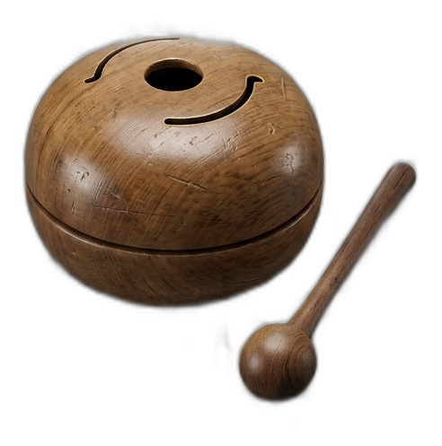

이 화면은 방문자에게는 보이면 안 돼요. 코드 상단의 FIREBASE_CONFIG / KAKAO_MAP_KEY 값을 채운 뒤 다시 올려주세요.
1. 새 Firebase 프로젝트 만들기
console.firebase.google.com → 프로젝트 추가 (이 절 탐방 앱 전용, 기존 청인마루/여행 발자국 프로젝트와 분리 또는 재사용 선택)
2. 로그인 방식 켜기
Build → Authentication → Sign-in method → Google만 사용 설정
3. Realtime Database 만들기
테스트 모드로 시작 → 나중에 규칙을 아래처럼 변경: {"rules":{"users":{"$uid":{".read":"auth!=null && auth.uid===$uid",".write":"auth!=null && auth.uid===$uid"}},"leaderboards":{"beatShooter":{".read":"auth!=null",".indexOn":["score"],"$uid":{".write":"auth!=null && auth.uid===$uid"}}}}}
4. Realtime Database 규칙 게시
완료했으면 다음 단계로
5. 웹 앱 등록
프로젝트 설정(⚙) → 일반 → 내 앱 → 웹 앱 추가 → config 7개 값을 코드 상단 FIREBASE_CONFIG에 붙여넣기
6. 사진 저장 (Cloudinary, 카드 필요 없음)
cloudinary.com 가입 → Dashboard에서 Cloud Name 확인 → Settings → Upload → Upload presets → Add upload preset → Signing Mode를 Unsigned로 설정 → 두 값을 코드 상단 CLOUDINARY_CLOUD_NAME / CLOUDINARY_UPLOAD_PRESET에 붙여넣기
7. (선택) 카카오맵 키
developers.kakao.com에서 JavaScript 키 발급 → KAKAO_MAP_KEY에 붙여넣기, Web 플랫폼에 실제 배포 주소 등록
8. 배포 도메인 등록
Firebase 콘솔 → Authentication → Settings → 승인된 도메인에 실제 배포할 주소(예: cheonginmaru.com) 추가해야 구글 로그인이 작동해요
산사노트
전국의 절을 기록하는 나만의 순례 노트. 유네스코 산사부터 조용한 숨은 고찰까지, 다녀온 절과 사진을 한곳에 모아보세요. 가입하면 어느 기기에서든 이어서 쓸 수 있어요.
아이폰·아이패드 홈 화면 앱에서는 Google 로그인 창이 제한될 수 있어요. Safari에서 sansanote.com을 열어 한 번 로그인하면 더 안정적이에요.
스님들이 참선할 때 쓰는 '수식관(數息觀)' — 숨을 헤아리며 마음을 가라앉히는 전통 수행법이에요
준비
시작 버튼을 눌러주세요
🙏 이 시간은 마음을 잠시 쉬게 하는 작은 방편일 뿐이에요. 계속 마음이 무겁다면, 그 마음을 혼자 두지 말고 가까운 사람과 나눠보세요.
🎡 오늘은 여기!
가보고 싶은 곳 중에서 랜덤으로 골라드려요
🙏 108배 세기
속도를 정하면 알아서 박자를 맞춰드려요, 그 박자에 맞춰 절하시면 돼요
0 / 108
대기 중
신호(종소리·진동)가 울릴 때마다 절을 한 번 올리면 돼요. 급하면 속도를 늦춰도 괜찮아요.
🎵 명상 플레이리스트
비워내 비워내
0:000:00
싱크 0.0초
현재 곡마다 싱크 보정값을 따로 저장해요. 가사가 먼저 나오면 ‘늦춤’, 가사가 늦게 나오면 ‘앞당김’을 눌러 0.2초씩 맞출 수 있어요. 창을 닫아도 음악은 계속 재생돼요.
🎵
비워내 비워내
🥢 무한 목탁
답답할 때 마음껏 두드려보세요
0
두드릴 때마다 번뇌가 하나씩 사라져요

오늘 총 0번 두드렸어요
🧧 나만의 기원 부적
소원을 담아 이미지로 만들어드려요
📿 염불 카운터
부처님·보살님의 이름을 부르며 마음을 모으는 '칭명염불'이에요
📖 어떻게 하나요? 합장하거나 절을 하면서, 아래 이름을 마음속으로(또는 소리 내어) 되뇌어보세요. 자동 모드가 기본이라 손을 대지 않아도 알아서 종소리로 세줘요. 직접 누르며 세고 싶다면 아래에서 "수동으로 하기"를 눌러보세요.
관세음보살
0
오늘 총 0번 하셨어요
🔔 자동 모드 · 속도를 골라보세요
📸 순례 인증 카드
인스타 스토리에 바로 올릴 수 있는 크기예요
선택한 절로 카드를 만들고 있어요.
🛂 순례 여권
대표 순례 코스 5가지, 현장(반경 500m)에서 인증하면 도장이 찍혀요
📖 나만의 순례집
다녀온 절들을 한 권의 책으로 만들어드려요
다녀온 절 0곳이 담겨요. 사진이 있는 곳은 함께 들어가요.
절 개수가 많으면 만드는 데 시간이 좀 걸려요. 창을 닫지 말고 기다려주세요.
📿 기도문 모음
자주 쓰이는 기도문 네 가지와 쉬운 해석이에요
1. 천수경 — 정구업진언 & 개경게
기도를 시작할 때 마음과 입을 정돈하며 읽는, 천수경의 맨 앞 구절이에요.
수리수리 마하수리 수수리 사바하
무상심심미묘법 백천만겁난조우
아금문견득수지 원해여래진실의
정구업진언: "입으로 지은 모든 나쁜 말과 업을 깨끗이 씻어내어 맑고 상서롭게 하소서." 개경게: "가장 높고 깊고 오묘한 부처님의 법은 백만 년의 세월이 흘러도 만나기 어렵습니다. 제가 이제 다행히 보고 듣고 마음에 새기오니, 부처님의 참된 뜻을 온전히 깨닫게 해 주소서."
2. 반야심경 — 핵심 구절
260자의 짧은 글이지만, 불교의 정수가 담긴 경전이에요.
색불이공 공불이색 색즉시공 공즉시색
아제아제 바라아제 바라승아제 모지 사바하
색즉시공: "눈에 보이는 모든 형태와 세상만물(색)은 고정된 실체가 없으며(공), 텅 빈 본질(공)이 곧 우리가 눈으로 보는 모든 것(색)입니다." — 세상 모든 것은 끊임없이 변하니, 겉모습에 집착해 괴로워할 필요가 없다는 뜻이에요. 마무리 주문: "가자, 가자, 저 너머 깨달음의 언덕으로 다 함께 건너가자. 깨달음을 이루어 영원한 평화를 얻으리라."
3. 발원문 — 일상 기도 예시
정해진 한문 경전이 아니라, 부처님께 내어놓는 진심 어린 편지글이에요.
"자비로우신 부처님,
오늘 제가 올린 이 작은 기도의 공덕을 모든 이웃과 나누고자 합니다.
저희 가족이 건강하고 마음의 평안을 누리게 하시며,
저 또한 남을 원망하지 않고 따뜻한 말 한마디를 건넬 수 있는 지혜와 용기를 주옵소서.
괴로움 속에 있는 모든 생명이 부처님의 자비 속에서 평화롭기를 간절히 발원합니다."
단순히 "돈 많이 벌게 해주세요" 같은 기복을 넘어서, 내 마음의 태도를 바로잡고 나와 남이 함께 행복해지기를 다짐하는 글이에요.
4. 진언(다라니) — 옴 마니 반메 훔
뜻을 해석하기보다, 그 소리의 맑은 울림 자체를 귀로 들으며 마음을 정화하는 수행이에요.
옴 마니 반메 훔 (Om Mani Padme Hum)
옴(Om): 우주의 시작과 모든 신성함을 상징하는 소리 마니(Mani): 원하는 것을 이루어 주는 투명한 보석(여의주) 반메(Padme): 진흙탕 속에서도 물들지 않고 피어나는 연꽃 훔(Hum): 깨달음을 완성하고 성취하는 소리
종합 해석: "온 세상의 신성함이여, 더러운 진흙 속에서도 아름답게 피어나는 연꽃 속의 보석처럼, 내 마음속의 탐욕과 미움을 지우고 순수한 지혜로 깨어나게 하소서."
🙏 법당 예절 · 108배
처음이라 어색해도 괜찮아요, 천천히 따라해보세요
👟 법당 들어가기 전
신발은 밖에 가지런히 벗어두세요. 손을 씻고 들어가면 더 좋아요. 반바지·민소매 등 노출 심한 옷차림은 피하고, 모자는 벗어주세요.
🚪 어느 문으로 들어갈까
가운데 문(어간문)은 그 절의 큰스님만 다니는 문이에요. 일반 방문객은 양옆 문으로 들어가세요. 문턱은 밟지 말고 넘어가는 게 예의예요.
🙏 인사하는 순서
1. 부처님을 마주 보고 서요.
2. 합장(두 손바닥을 가슴 앞에 가지런히 모으기) 자세를 해요.
3. 허리를 60도쯤 굽혀 반배(작은 절 한 번)를 해요. 처음이면 이것만 해도 충분해요.
4. 여유가 되면 큰절(무릎 꿇고 이마를 바닥에 대는 절)을 3번(삼배) 올려도 좋아요.
5. 나올 때도 부처님 쪽을 향해 다시 한번 반배하고, 뒷걸음으로 몇 걸음 물러난 뒤 돌아서 나오면 더 예의 있어요.
🧑🦱 스님을 만나면
스쳐 지나가듯 만났다면 합장하고 가볍게 반배(목례)만 해도 돼요. 다만 스님이 식사·양치·좌선·목욕 중이시거나 화장실에서 마주쳤을 땐 절하지 않고 목례만 해요.
🕯 법당 안에서
조용히, 큰 소리로 대화하지 않기. 불상 정면을 함부로 가로지르지 않기. 불상 촬영 가능 여부는 절마다 달라서 안내판을 먼저 확인해보세요.
🌀 탑돌이 예절
탑이나 불상 주위를 돌 때는 시계 방향으로 도는 게 전통이에요 (부처님을 오른쪽 어깨 쪽에 두고 도는 '우요삼잡'에서 유래).
108배란
108가지 번뇌(마음을 어지럽히는 생각들)를 하나씩 내려놓는다는 마음으로 절을 108번 올리는 수행이에요. 많은 절에서 '108배 참회문'이라는 108개의 짧은 글귀를 하나씩 읽으며 절을 하는데, 절마다 문구가 조금씩 달라요. 보통 앞부분은 지난 일을 돌아보는 참회, 중간은 부모·스승·자연에 대한 감사, 뒷부분은 앞으로의 다짐(발원)으로 이어지는 구성이 많아요.
처음이면 108번을 다 못 채워도 괜찮아요. 절 자체가 이미 좋은 운동이자 명상이에요. 무릎이 안 좋다면 무리하지 마세요.
🎒 사찰 방문 준비물 체크리스트
몇 번 절해야 하나요?
1배: 법당을 지나가며 가볍게 인사할 때, 스님께 인사할 때 3배: 절에 들어가 처음 참배할 때, 예불에 참여할 때 가장 흔히 하는 횟수예요 108배: 특별히 마음을 다잡고 수행하고 싶을 때, 108번뇌를 내려놓는다는 마음으로 1080배·3000배: 아주 큰 정진을 하는 스님이나 신도들이 특별한 날에 하기도 해요 (초보자는 권하지 않아요)
주의할 점
· 절과 절 사이는 서두르지 말고, 한 번에 3~5초 정도의 여유 있는 속도로 해요.
· 딱딱한 바닥이면 방석이나 절 방석을 깔고 하세요.
· 무릎, 허리, 손목이 안 좋다면 무리하지 말고 반배로 대신하거나 개수를 줄이세요.
· 숨을 참지 말고, 굽힐 때 내쉬고 일어날 때 들이쉬는 식으로 편하게 호흡하세요.
· 처음엔 10~20번만 해봐도 충분해요. 다음에 조금씩 늘려가면 돼요.
🌅 발원문
1년 뒤, 모든 게 순조롭게 풀렸다면 당신의 삶은 어떤 모습일까요?
📖 불교 용어 사전
절 설명에 자주 나오는 말들, 쉽게 풀어드려요
이 절 어디게?
맞은 개수: 0
나의 순례 앨범
지금까지 찍은 사진 모음
나의 뱃지
코스를 완주하면 뱃지가 채워져요 (다녀왔어요 이상)
코스별 진행률
순례 등급표
내 코스 자동 정렬
지금 화면에 보이는 절들을 가까운 순서로 정렬해요
🙏 마음 처방 · 즉문즉설
고민을 적으면 마음을 다독이는 말과 오늘 해볼 작은 방법을 함께 드려요.
😎
무념 스님의 마음 처방
“정답보다 먼저, 마음이 조금 가벼워지는 말부터.”
이 기능은 재미와 가벼운 위로를 위한 랜덤 응답 카드예요. 중요한 결정은 현실의 정보와 사람들의 도움도 함께 살펴보세요.
🎛️ 번뇌 타파 BEAT SHOOTER
같은 색·같은 종류의 패드를 눌러, 바로 위 레인의 번뇌만 정확히 격추하세요.
🔊 소리 준비중
BPM 96
MISSION · 같은 레인의 맞는 패드로 8번 연속 격추!
0SCORE
0COMBO
×1ACC 100%SPEED ×1.00BEST 0
1LEVEL
초심자0/500 XP
🪙 0
🌱 입문🪷 연꽃🔔 범종🔥 무아🌈 극락👑 해탈
생명 ❤️❤️❤️맞는 패드만 점수 · 빗나가면 콤보 RESET
READY맞는 패드만 정확히 쏘세요
🚀 6-LANE SHOOTER · 패드 바로 위로 직선 발사
WAVE 1
단어 아래의 작은 표시와 같은 패드를 눌러야 HIT · 다른 패드는 MISS
GAME OVER번뇌가 방어선을 3번 통과했습니다한 번 통과한 직후에는 잠깐 보호막이 생겨 연속 실점하지 않아요.